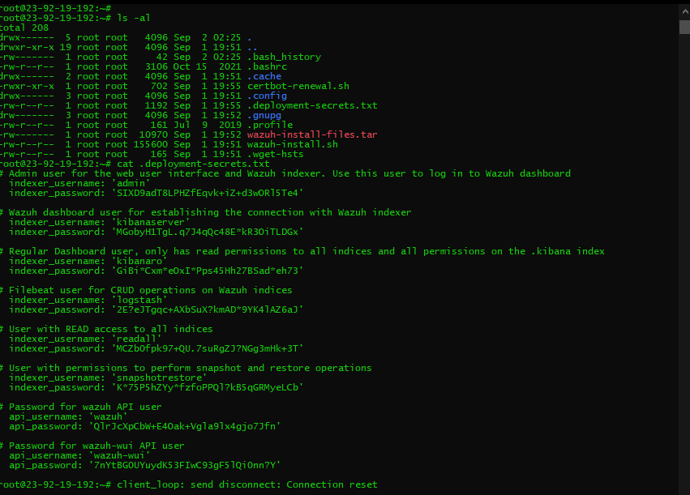
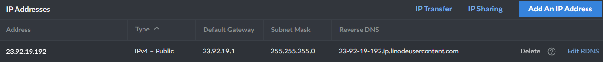
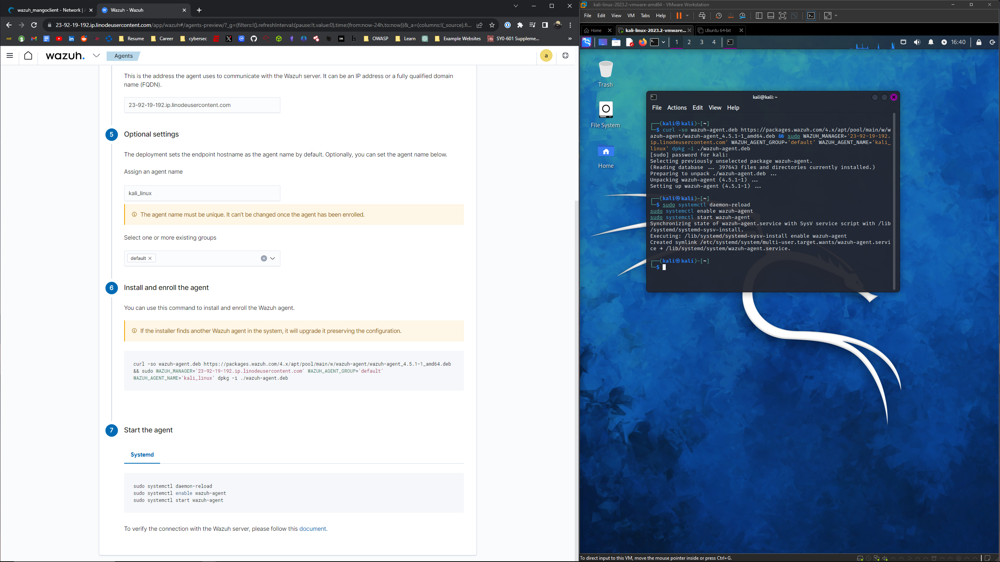
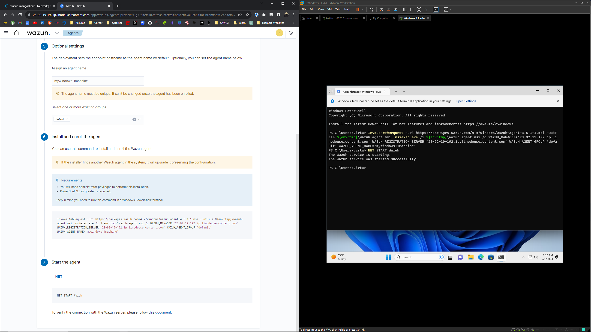
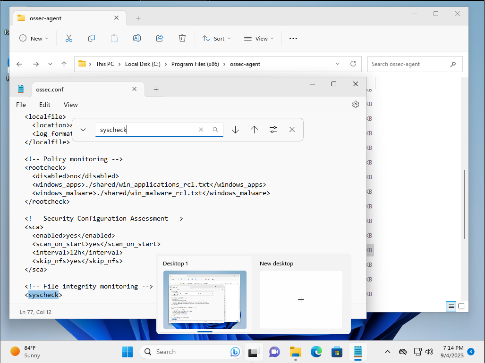
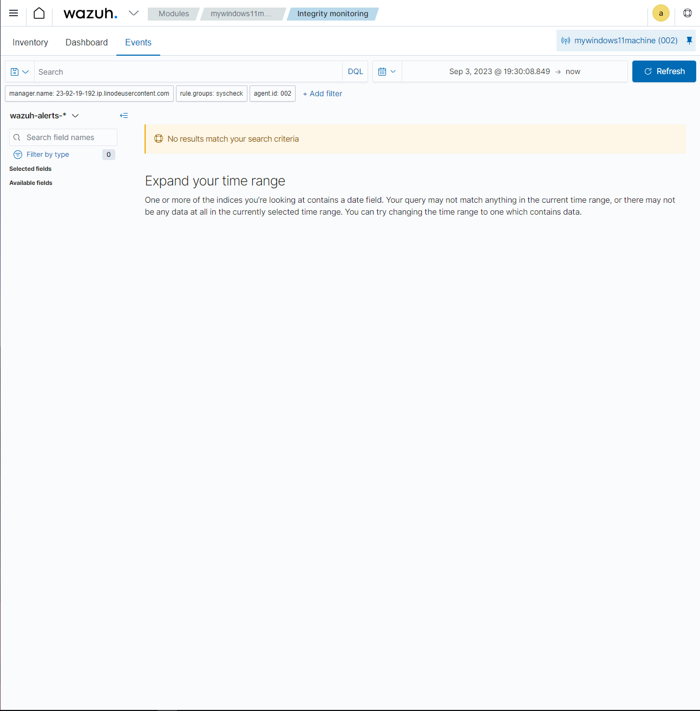

Wazuh
What is Wazuh?
Wazuh is an open-source security monitoring platform designed for threat detection, visibility, and compliance. It helps organizations analyze and manage security events and incidents across their environments.
Wazuh has multiple features including:
- Log analysis: collects and analyzes logs from various sources, such as OS, applications, network devices, and more. It processes these logs to identify potential security threats, anomalies, and suspicious activities.
- Intrusion Detection: uses rules and decoders to detect intrusion attempts and known attack patterns. It monitors for signs of unauthorized access, malware infections, and other malicious activities.
- Real-time alerts: identifies a potential security incident, it generates real-time alerts to notify administrators or security teams. These alerts help organizations respond swiftly to threats.
Linode Installation for Wazuh Lab
- Click on create Linode
- Goto Marketplace
- Click on Wazuh Pre Installation Setup
- Enter an email for SSH certificate
- create sudo user and password
- select the Ubuntu 22.04 LTS image
- select a region most closest to you
- Next click on Linode plan and select Wazuh recommended size: 4GB
- Finally enter a root password, and click create Linode
Accessing the Wazuh Instance
To access the instance, copy and paste the ssh access command into a terminal.
Run the command ls -al and cat the .deployment-secrets.txt file

Run over to the Networks tab in the Linode dashboard and copy the RDNS and type into your web browser: https://RNS
Once you are redirected to the application, use the admin login and admin password to access.

Adding Agents
Agents are referred to as the software components that are installed on individual hosts or systems to collect security-related data and send it to a centralized Wazuh manager or server for analysis and monitoring.
Here are the steps to adding an agent in Wazuh:
- Click on Add Agent -> Deploy a new agent
- Choose the Operating System of your choice
- Connect the Wazuh server address (FQDN). This can be found in the in the Networks tab of your Linode Dashboard, under Reverse DNS.
- Create an Agent name and select the default group
- Lastly, Install and enroll the agent by copying and pasting the command into your terminal of your agent.
- Start the agent by doing the same, copying and pasting the command into your terminal of your agent.
In this example, I created two agents for two of my virtual machines on my VMware Workstation. One agent running Kali Linux and the other running Windows 11.


Exploring the Wazuh Dashboard
When clicking on a particular agent, you can see the dashboard that displays many different aspects.
- MITRE framework: shows the database of hacking techniques that hackers use to attack your computer.
- Compliance, standards that are listed that tell you what policies are are ongoing and eusring that these violations are resolved.
- Configurations (Secure Configuration Assessment): the process of verifying that all systems conform to set a predefined rules regarding configuration settings and approved application usage. When clicked, you can break down checks to make sure you are reducing the amount of vulnerability surfaces and attack vectors on that particular machine/agent, rationale on why they're mentioning the failure, how to fix it (remediation), and even compliance policies and numbers.
File Integrity Monitoring
In Wazuh, there is a section that helps detect and inform users when a file has been modified, added, or deleted in a system. In order to enable this, a user should conduct the following:
Head to this directory in Windows File Explorer:
- This PC -> Local Disk (C:) -> Program Files (x86) -> ossec-agent -> ossec.conf
- Command F "syscheck" to goto the File Integrity Monitoring section
- Add in a new configuration:
directories realtime="yes" report_changes="yes" check_all="yes">C:\Users\virtu\Desktop /directories

- Now, file -> save the file
- Restart the Wazuh service by running this command:
restart-service -name Wazuh
- Now to test this, you can create/modify/delete a file and these changes should be shown in the Integrity Monitoring Window of your Wazuh application.
